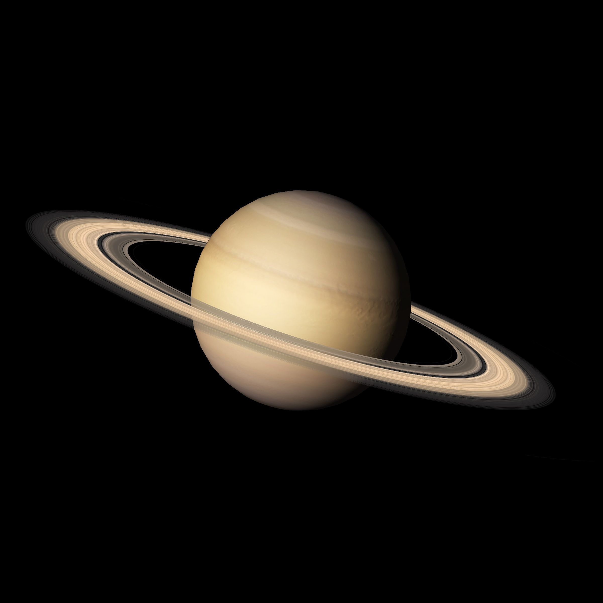

Сатурн классифицируется как газовая планета-гигант. Он назван в честь римского бога земледелия. В основном Сатурн состоит из водорода с примесями гелия и следами воды, метана, аммиака и тяжёлых элементов. Внутренняя область представляет собой относительно небольшое ядро из железа, никеля и льда, покрытое тонким слоем металлического водорода и газообразным внешним слоем.

Крупнейшие спутники планеты